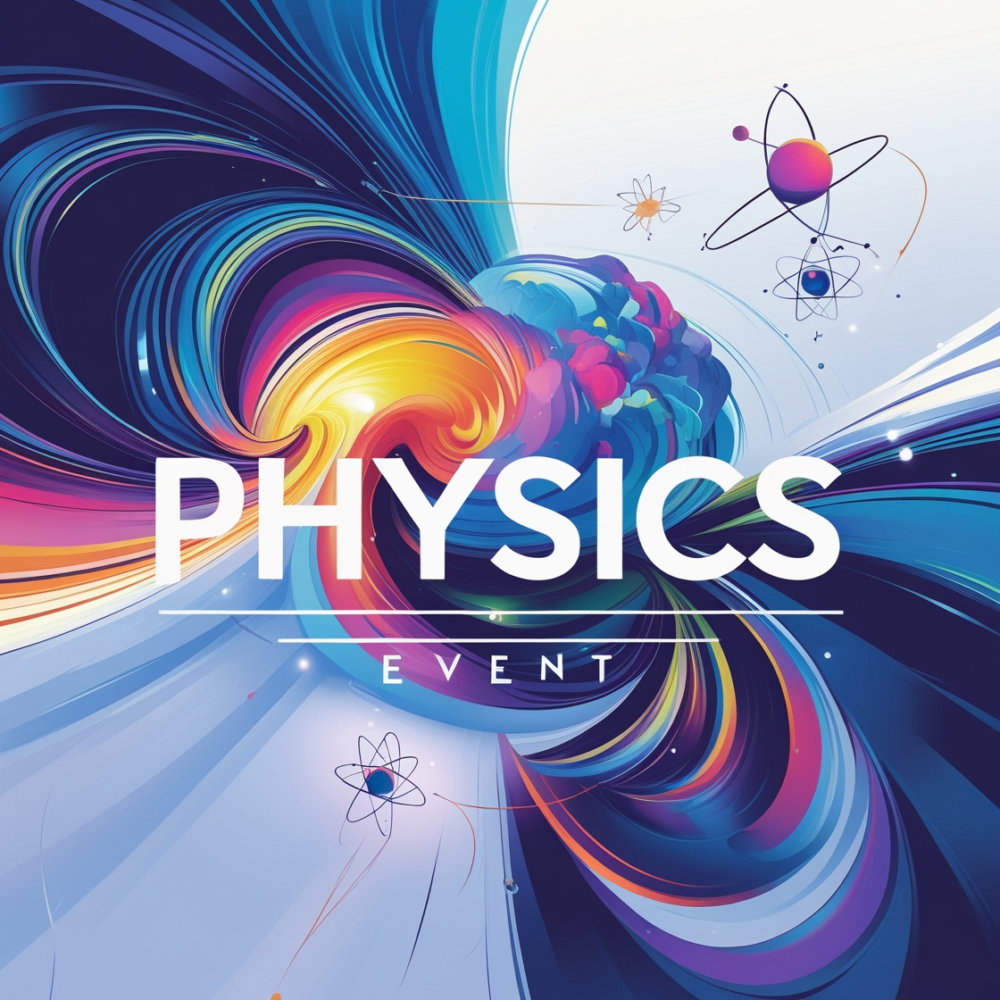
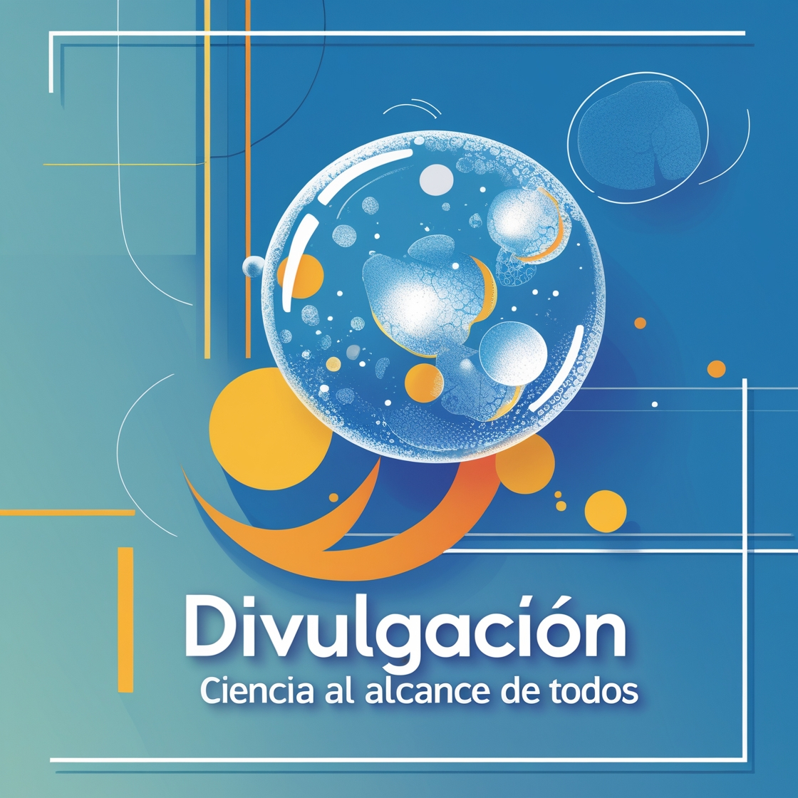

Directiva actual (2024-2025)

Presidente
| Nombre | Jorge Eduardo Cargua Merlo |
|---|---|
| Lema | "La Física no es tan difícil, es apasionante. Es descubrir, cuestionar y ver el mundo que nos rodea. Aquí aprenderás, disfrutarás, viajaras, conocerás personas increíbles y, sobre todo, crecerás en cada paso de la carrera" |
| Correo institucional: | jorge.cargua@espoch.edu.ec |
| Funciones: | Líder del club, responsable de velar por el cumplimiento de sus objetivos y dirigir reuniones. Representa al club en eventos oficiales y ante instituciones externas. |

Vicepresidente
| Nombre | Diego Dario Niza Lagla |
|---|---|
| Lema | "En el error también está el aprendizaje. Así que toma el riesgo y ve por ello" |
| Correo institucional: | diego.niza@espoch.edu.ec |
| Funciones: | Asiste al presidente en sus funciones y lo reemplaza en caso de ausencia. Apoya en la planificación y ejecución de actividades del club. |

Secretario
| Nombre | Carlos Alejandro Jara Caiza |
|---|---|
| Lema | "Sin riesgo, no hay historia. Tienes que tomar riesgos para encontrarte a ti mismo." |
| Correo institucional: | carlosa.jara@espoch.edu.ec |
| Funciones: | Encargado de registrar las actas de cada reunión y gestionar los documentos oficiales del club, asegurando el orden y la transparencia en la información. |

Tesorero
| Nombre | Jonathan Stiven Tapia Avila |
|---|---|
| Lema | "El universo es misterioso y cada vez me emociona el aprender más sobre el." |
| Correo institucional: | jonathan.tapia@espoch.edu.ec |
| Funciones: | Administración de actividades interiores y exteriores del club, representar al club en eventos formales, organización de miembros en las distintas comisiones. |
Comisiones
Comisión académica
| Líder: | Mauricio Jara |
|---|---|
| Descripción: | La Comisión Académica es el pilar del desarrollo científico del club. Se encarga de organizar charlas, talleres, cursos y debates, así como de brindar tutorías y apoyo académico. Además, desarrolla material educativo que fortalece el aprendizaje de los miembros y fomenta el interés por la investigación y la divulgación. |
| Cantidad de integrantes: | 12 |
Comisión de comunicación
| Líder: | Erick Castro |
|---|---|
| Descripción: | La Comisión de Comunicación es el puente entre el club y la comunidad, encargándose de la gestión de redes sociales, la creación de contenido audiovisual y la difusión de actividades. Su objetivo es garantizar que el trabajo del club sea visible y accesible para todos, promoviendo la ciencia a través de estrategias digitales innovadoras. |
| Cantidad de integrantes: | 8 |
Comisión de relaciones externas
| Líder: | Keyla Campos |
|---|---|
| Descripción: | La Comisión de Relaciones Externas representa al club en asociaciones nacionales e internacionales, estableciendo vínculos estratégicos que benefician a sus miembros. Su labor incluye la gestión de alianzas, la participación en eventos académicos y la difusión de oportunidades como becas, congresos y proyectos de colaboración. |
| Cantidad de integrantes: | 5 |

Comisión de eventos
| Líder: | Alison Samaniego |
|---|---|
| Descripción: | La Comisión de Eventos se encarga de la planificación, logística y ejecución de actividades científicas y recreativas. Además, desarrolla estrategias de recaudación de fondos para el crecimiento del club y coordina la realización de ferias, conferencias y otras iniciativas que promuevan la participación activa de la comunidad. |
| Cantidad de integrantes: | 7 |

Comisión de divulgación y entretemiento
| Líder: | Jospeh Roldan |
|---|---|
| Descripción: | La Comisión de Divulgación y Entretenimiento combina ciencia y cultura mediante la creación de una revista donde se analizan cómics, mangas, series y películas desde una perspectiva científica. Su objetivo es hacer que el conocimiento sea accesible y entretenido, utilizando el arte y el entretenimiento como herramientas de divulgación. |
| Cantidad de integrantes: | 8 |
Comisión de desarrollo web
| Líder: | Alexander Zarango |
|---|---|
| Descripción: | La Comisión de Desarrollo Web es responsable de la gestión y mantenimiento de las plataformas digitales del club. Su labor incluye la creación y actualización de la página web, el desarrollo de herramientas digitales para la organización de eventos y la optimización de recursos tecnológicos que faciliten la difusión de contenido y la interacción con los miembros. |
| Cantidad de integrantes: | 7 |